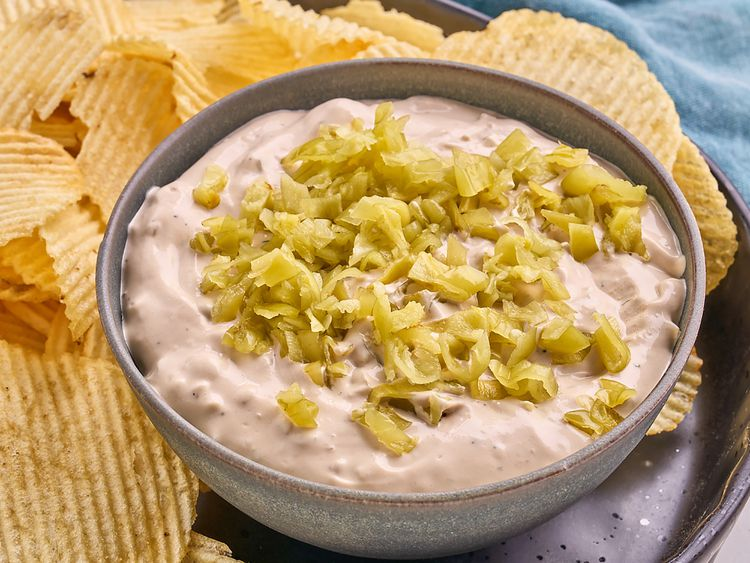

Roast Dips

Saus panggang dibuat dari sari-sari daging dan mudah dibuat.
Komposisi
- Air secukupnya
- Daun bawang
- Daging sapi panggang
- Keju mozarella
- Mentega
- Tepung terigu
- Garam dan merica (secukupnya)
Langkah-langkah
-
Lelehkan mentega dalam wajan, tambahkan tepung terigu, aduk rata hingga
berwarna kecoklatan.
-
Tuang air sedikit demi sedikit sambil terus diaduk hingga tidak
bergerindil.
-
Masukkan potongan daging sapi panggang dan daun bawang, aduk rata.
- Didihkan sebentar, tambahkan garam dan merica sesuai selera.
- Masukkan keju mozarella, aduk hingga meleleh dan saus mengental.
- Angkat dan sajikan hangat sebagai cocolan atau pelengkap roti.
Home